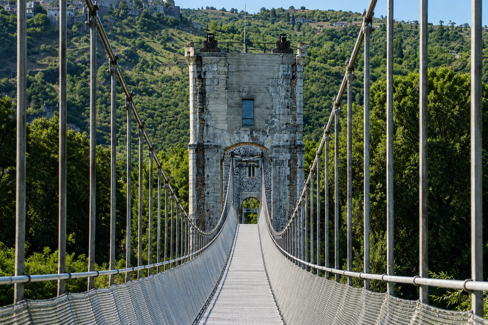

About 30 minutes from Les Cabritas, Rochemaure and Saint-Vincent-de-Barrès form two neighbouring stops at the foot of the ancient Coiron volcanoes. The first is known for its medieval village and spectacular Himalayan footbridge over the Rhône, the second for the quiet charm of a characterful village.

The Himalayan footbridge, a suspension bridge reinvented
Built in 1858 using Marc Seguin's suspension bridge technique, the old Rochemaure footbridge long served as a crossing between the Drôme and Ardèche, before its final closure in 1982. Listed as a historic monument in 1985, it was saved from demolition and turned into a Himalayan-style footbridge, inaugurated in 2013: its original piers were restored and its deck replaced with a suspended metal structure roughly 300 metres long. Now used by pedestrians and cyclists on the ViaRhôna, it draws over 100,000 visitors a year, drawn by the views over the Rhône, the Coiron hills, the extinct Chenavari volcano and the medieval castle overlooking the town.
Rochemaure, a medieval village at the foot of the volcanoes
The village of Rochemaure is arranged around the ruins of its castle, with stone lanes and a well-preserved atmosphere. The site offers a lovely opportunity to combine built heritage with volcanic scenery, typical of the Coiron plateau that dominates the region.
Saint-Vincent-de-Barrès, a hidden gem of the Coiron
A few minutes away, Saint-Vincent-de-Barrès rounds out the outing nicely: a lesser-known but characterful village, with quiet lanes and architecture typical of the Coiron, ideal for extending the stroll at a relaxed pace.

Practical info from Les Cabritas
- Distance from Flaviac: about 30 min by car
- Best time to go: all year round, spring and autumn for walking
- Great for: heritage, thrills (suspended footbridge), photography
Fancy discovering Rochemaure and Saint-Vincent-de-Barrès from your cottage in Ardèche?
Les Cabritas welcomes you in Flaviac, at the heart of Ardèche, for a comfortable stay with a private pool, just a stone's throw from the region's most beautiful sites.
Check availability